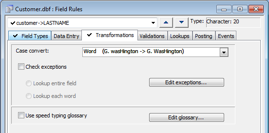

Changing the Case of Words
Transformation Rules automatically change entries to uppercase or lowercase, and define shortcut abbreviations for entering commonly used words and phrases.

You can automatically change words in a character field to uppercase, lowercase, proper case, or initial capitals. You can also define special cases when the rule should not be applied.
Creating a Case Conversion Rule
In the Control Panel select the table and click Table > Edit Field Rules.
Display the Transformations tab.
Select an entry from the Case convert list. The options are:
"Upper"
"Lower"
"First"
"Word"
"Low & First"
"Low & Word"
This table shows the different effects of the case conversion options.
|
Conversion |
Before |
After |
|
Upper |
kate o'brien |
KATE O'BRIEN |
|
Lower |
KATE O'BRIEN |
kate o'brien |
|
First |
kate o'brien |
Kate o'brien |
|
Word |
kate o'brien |
Kate O'brien |
|
Low & First |
kate o'bRIEN |
Kate o'brien |
|
Low & Word |
kate o'bRIEN |
Kate O'brien |
Alpha Anywhere lets you define words that do not conform to any pre-defined case conversions, such as a name with mixed upper and lowercase letters.
Check the Check exceptions check box.
Decide at what level you want to examine the user's input. Choose either Lookup Entire Field or Lookup Each Word.
Click Edit Exceptions to add items to display the Special Case Conversions dialog box and update its entries.
You can also use the Speed Glossary to define field rule transformations.
Check the Use speed typing glossary check box.
Click Edit glossary... to add items to display the Speed Glossary dialog box and update its entries.